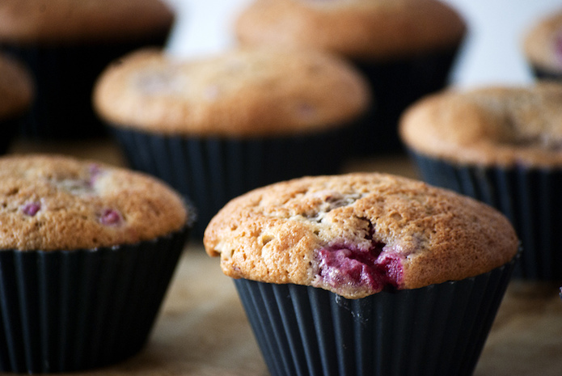

Guest post: Why the BBC should make its recipes database open data
The BBC has announced that it is cutting its popular recipe service. Open data could be the key to retaining its value, says Andy Dickinson

BBC Food recipes are a popular resource for foodies across the UK. CC BY 2.0, uploaded by [hennasabel](https://www.flickr.com/photos/hennasabel/4849860306/ “hennasabel").
The BBC has announced that it will mothball its database of over 11,000 recipes, as part of a plan to cut £15m from its website budget. The idea is to focus on distinctive content, which you can read in a number of ways including ‘to stop doing things that are commercially attractive’.
As you may imagine, the announcement has not gone down well with users who see it as exactly the kind of distinct content the BBC do so well. There’s a petition to keep the archive calling it a "precious resource for people across the country providing easy, free and importantly independent information on a vast range of foods and recipe options." But its unlikely that the recipes will remain. In the wake of the BBC white paper there are sacrifices to the market that need to be made.
However, maybe there is a middle ground. I think the BBC should make the data for its recipes open.
Why open data
The principle of open data is that if you make data open, it can create value. People use it to build innovative new products and services that help people and (sometimes) make money; social and economic innovation, all from making a CSV file available.
There’s a growing and active community around open data. Some of that community likes the challenge of doing good things with data; some see the commercial opportunities. but everyone is committed to making it work – it should be a virtuous circle.
The BBC making its recipe data open would have many benefits:
Data wouldn’t be lost – the crowd would take care of archiving and developing the content.
The data would be kept alive – an active community might contribute other recipes, improvements or corrections.
Data could be linked for better value – making the data open means that practically it would become easier to integrate other data sources, like the ‘Composition of Foods Integrated Dataset’ (CoFID) or even retail pricing data etc.
A market would be created (and sustained) – anyone can use open data, even companies looking for commercial applications.
That last one is the key one here for me. You don’t need 'House of Cards' levels of political insight to see the political context of this decision. There’s a hefty dose of liberal market reform being stirred into the pot. But I think 'going open' would support that – make the data open; retain the value created; level the playing field and let the market compete.
The arguments against it fall into well-worn paths for those involved in open data. I’m thinking they would fall into one of a few areas:
'This is commercially valuable information.' Yes it is (the cynic in me would say that’s why the BBC has had to make this move). But the BBC is paid for by a licence fee, which the public pay. We get a great service and I’m not saying we should have it just because we pay a licence fee (it’s not quite Free our Data). But if we are prepared to crowdsource that provision, why not?
'It’s not commercially easy to make it all open.' Obviously some of the recipes may not belong to the BBC, so there are licensing issues. (I’d argue that those commercial entities that have provided the recipes have had a fair share of value already, but appreciate that it takes time.)
'It’s not technically easy to make it all open.' This is also true. It isn’t just a case of dumping a database. But others have done it to some degree. Take a look at the NYTimes and its recipe datasets as great example of the way value can be created by taking the time to structure the data. But by making it open data, you almost bake in the tech support from a broader community.
Notwithstanding these concerns, this is a great opportunity. It’s a chance for the BBC to move gracefully out of a market place without leaving the consumer high and dry. It’s a great chance to retain the value while giving the market reformers a chance to put their money where their mouth is and compete. It’s also a great chance to reach beyond the dominant discourse of government accountability and transparency, and explore the ways open data can create social and economic value – outside of the open government data value chain.
Editor's note: Since this article was written, the BBC said it would move as much as possible of the content currently on its BBC Food website over to the BBC Good Food site, which is owned by commercial arm BBC Worldwide.
This article first appeared on Medium, on 17 May 2016.
Andy Dickinson is a journalist, online journalism lecturer and ODI Supporter.
If you have ideas or experience in open data that you'd like to share, pitch us a blog or tweet us at @ODIHQ.